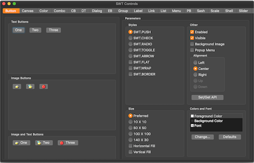

Here are descriptions of some of the changes of interest to plug-in developers made to the Eclipse Platform and SWT for the 4.12 release of Eclipse.
New features oriented towards end-users of the platform can be viewed in the What's New section of the Workbench User Guide.
Platform Changes |
|
| Compare/merge files using Generic Editor extensions |
To leverage the extensions for Generic Editor (syntax highlighting, hover...) when
comparing files, you can now simply associate the org.eclipse.ui.genericeditor.compareViewer
to the desired file content-types. This will automatically add to the compare view most extensions
contributed to the Generic Editor.
<extension point="org.eclipse.compare.contentMergeViewers">
<contentTypeBinding
contentMergeViewerId="org.eclipse.ui.genericeditor.compareViewer"
contentTypeId="org.eclipse.wildwebdeveloper.parent"/>
</extension>
|
| Extensible Quick Access content |
The Quick Access search (accessible with Ctrl+3 shortcut) now provides
a new org.eclipse.ui.quickAccess extension point to contribute additional content.
Classes in package The following example shows how Run and Launch Configurations are made available in Quick Access: <extension point="org.eclipse.ui.quickAccess"> <computer class="org.eclipse.debug.internal.ui.quickaccess.RunQuickAccessProvider" name="%Run.name"/> <computer class="org.eclipse.debug.internal.ui.quickaccess.DebugQuickAccessProvider" name="%Debug.name"/> </extension>
The computers implement the Computers are only contributing when their host bundle is started, bundles will not be started automatically when querying Quick Access. |
| Type parameters on Beans and JFace databinding classes |
Type parameters have been added to relevant classes and methods in the
org.eclipse.core.databinding.beans and
org.eclipse.jface.databinding bundles. This makes code using
these classes more explicit and clear and can help catching bugs in an early stage.
These changes complete the effort to use generics to improve the databinding framework,
which was started several years ago. If you use these databinding bundles you should be
able to get rid of many raw type warnings which have been unavoidable for a long time.
Example:
// The BeanProperties.value method returns a IBeanValueProperty<Bean, String>
IObservableValue<String> nameModel =
BeanProperties.value(Bean.class, "name", String.class).observe(bean);
// The WidgetProperties.text method returns a IWidgetValueProperty<Text, String>
IObservableValue<String> nameTarget = WidgetProperties.text().observe(textControl);
dataBindingContext.bindValue(nameTarget, nameModel);
The changes are fully binary compatible and no behaviour is changed. Tips for using the typed databinding API
Note about typed property factory classes: To avoid causing compile errors for clients new versions of
property factory classes that return typed property objects have been created. This applies for the
following classes: To start using these classes simply replace the import of the untyped factory classes by an import of the typed version. Note about EMF Databinding: EMF Databinding has not been updated with type parameters. That can make it awkward to use EMF Databinding together with the generified databinding APIs. A good strategy for working around that is to create factory methods for EMF properties with generic types as their return values:
@SuppressWarnings("unchecked")
public static IValueProperty<ModelEObject, String> name(EditingDomain editingDomain) {
return EMFEditProperties.value(editingDomain, ModelPackage.Literals.MODEL_EOBJECT__NAME);
}
|
| Tooltip support for CommonViewers |
It is now possible to provide tooltips to CommonViewer via ILabelProvider.
To do this, two steps are necessary:
|
| Wizards can now be non-modal |
New APIs have been added to WizardDialog to enable a wizard to be non-modal.
When a dialog is modal it means that the underlying window can not be used. Eclipse Wizard Dialogs are modal by default.
There are cases where it is desired that the dialog is not modal but that the underlying window can be reached while the user is finishing the wizard.
The following API methods are added to the JFace
In addition, the following methods have been made public to allow full control over the shell style of the
You can now use the following code:
or fluent
|
| CSS attribute swt-lines-visible |
A new css attribute 'swt-lines-visible' is supported on Table and Tree widgets and is mapped to getLinesVisible().
For example: The value of this property is true if |
SWT Changes |
|
| Dark mode support on Mac |
An SWT application on macOS 10.14 can now be launched in dark theme and all the controls are rendered with the native dark appearance.
The application will automatically launch in the light or dark theme based on the System appearance (set in System preferences).
You need to launch the application with  |
| Display.Close and Display.Dispose events sent on GTK on logoff/shutdown |
Display.Close and Display.Dispose events are now supported on GTK on logoff/shutdown. This works on GNOME and XFCE (> 4.13) sessions. This brings Linux/GTK in line with the Windows and Mac implementations:
|